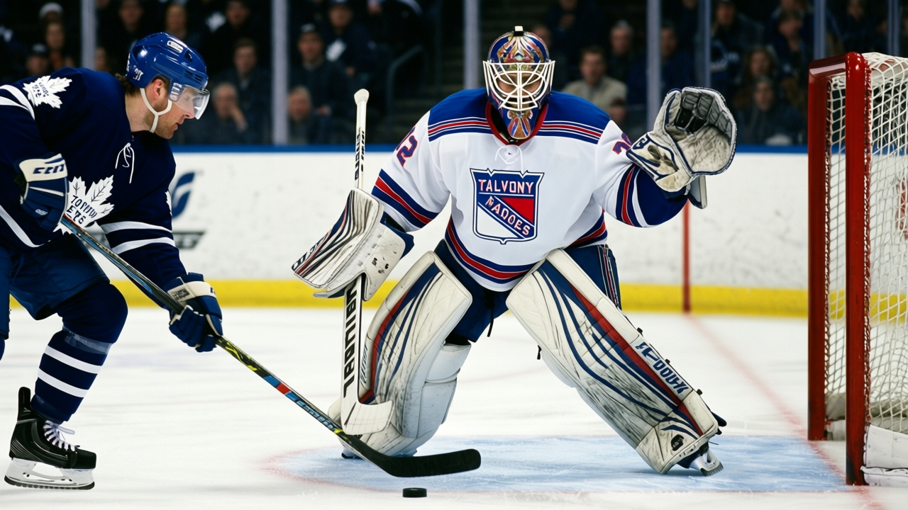

Goalie Watch: New York benches Dunham after 36 starts, promotes Markkanen, and Bure is back
Ten players changed status in the Rangers lineup this week, and the crease flipped in the same move
 Ray CallumSenior correspondent · Home Ice Network
Ray CallumSenior correspondent · Home Ice Network
The  New York Rangers Rangers have removed
New York Rangers Rangers have removed  Mike Dunham89 from the active roster after 36 starts this season and promoted
Mike Dunham89 from the active roster after 36 starts this season and promoted  Jussi Markkanen85 to the starting crease.
Jussi Markkanen85 to the starting crease.  Dan Blackburn79, who has played 3 games this season, moves up to G2. The lineup changes also brought
Dan Blackburn79, who has played 3 games this season, moves up to G2. The lineup changes also brought  Pavel Bure87 back into the active roster and placed
Pavel Bure87 back into the active roster and placed  Matthew Barnaby80 on the injured list with a neck injury, with a return date of January 13.
Matthew Barnaby80 on the injured list with a neck injury, with a return date of January 13.
Dunham carried 80 percent of the Rangers' workload, starting 36 of 45 games. Markkanen had 12 starts at a 27 percent share before this week. The club lost 3-2 at  Montreal Canadiens Montreal on January 9 to extend a 2-game losing streak, and sits at 20-16-4 with 54 points.
Montreal Canadiens Montreal on January 9 to extend a 2-game losing streak, and sits at 20-16-4 with 54 points.
Bure returns from the ankle injury listed in the club's injury ledger this season. He slots into the second-line right wing and the second power-play unit. Barnaby, who logged shifts across four line slots before the injury, was already a scratch after January 9.
Five players came out of the lineup and five went in: Craig Abid67, Barnaby,  Martin Cibak67, Dunham, and
Martin Cibak67, Dunham, and  Dale Purinton69 all cleared; Bure,
Dale Purinton69 all cleared; Bure,  Anson Carter86, Blackburn,
Anson Carter86, Blackburn,  Trent Whitfield66, and Mike Wilson69 filled their places.
Trent Whitfield66, and Mike Wilson69 filled their places.  Eric Lindros87 moved from right wing to centre.
Eric Lindros87 moved from right wing to centre.  Brian Leetch86 and
Brian Leetch86 and  Darius Kasparaitis76 both changed defensive pairs.
Darius Kasparaitis76 both changed defensive pairs.
Three road games, no home ice
New York visits Toronto on January 13, Washington on January 15, and Philadelphia on January 19. Whether Markkanen holds the crease through that stretch is the immediate question.